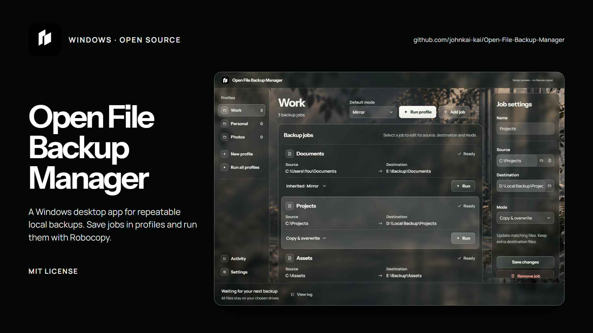
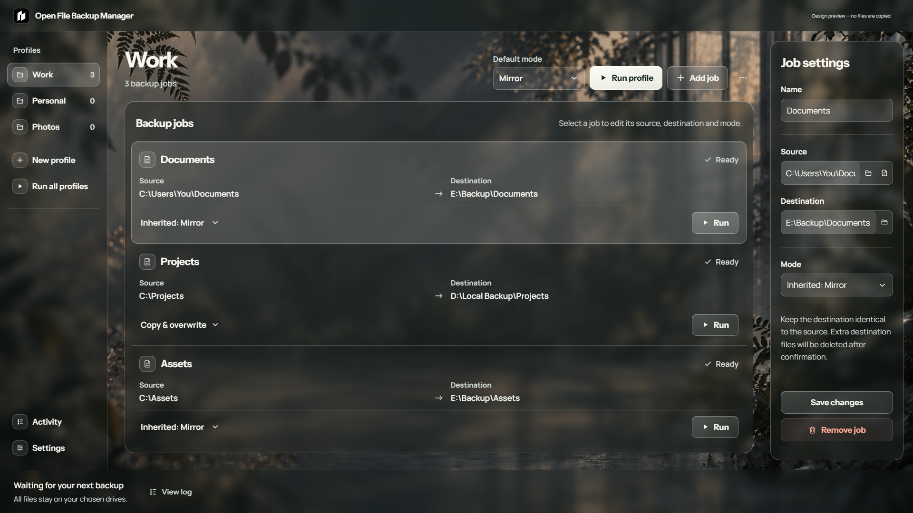
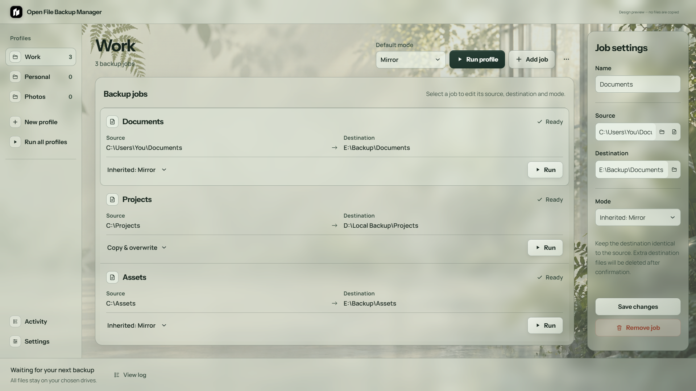
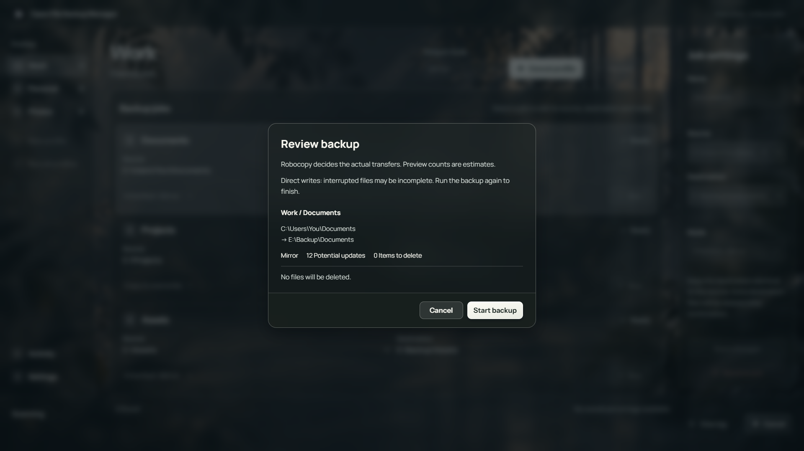
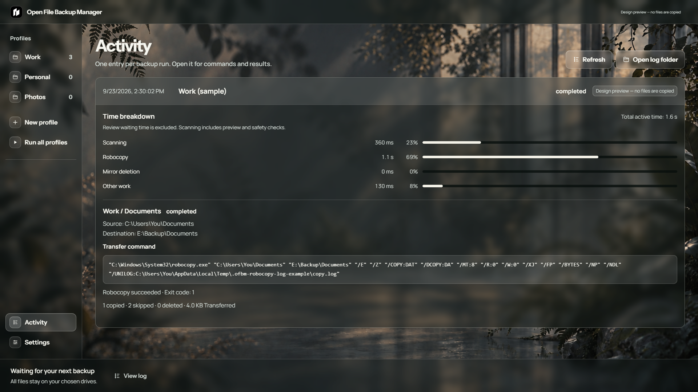
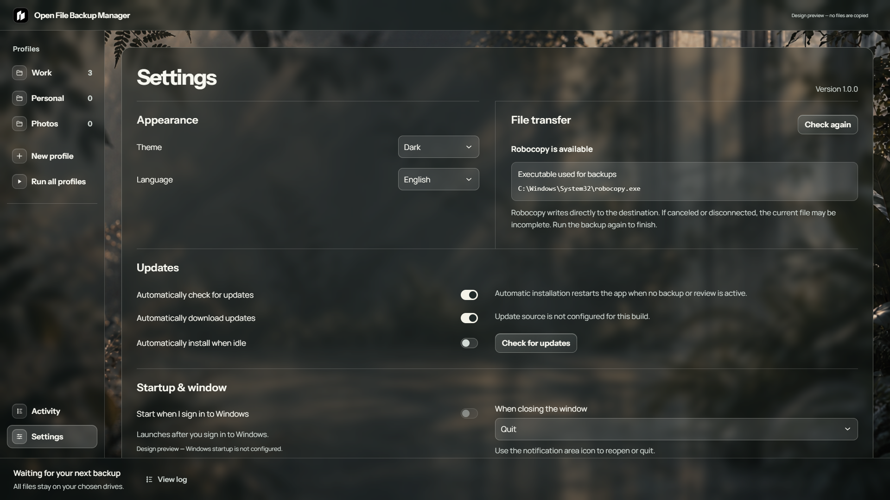

Open File Backup Manager
Save repeatable backups as named profiles and jobs. Run one job, a profile, or everything. Windows' built-in Robocopy handles every transfer.
Download the Windows installer
Windows x64 · v1.0.0 · MIT licensed

Dark theme; design preview with sample paths.
Light theme; design preview with sample paths.Backup modes
| Mode | Changed source files | Destination-only items |
|---|
| Mirror | Updated by Robocopy | Deleted only after review, explicit confirmation, successful copy, and source validation |
| Copy & overwrite | Updated by Robocopy | Kept |
Start a backup
- Install the app and choose an installation folder and desktop shortcut preference.
- Create a profile, then add a job with a source and destination.
- Choose a mode or inherit the profile default.
- Run one job, a profile, or all profiles. Review the preview and any mirror deletion list.

Progress and records
During transfer, the app shows the active job and most recently reported file. It does not invent a completion percentage. The finished summary comes from Robocopy's actual output. Activity keeps one expandable record per backup operation with the complete executable, arguments, command, exit code, errors, and a timing breakdown for new runs. Active time is split into scanning and safety checks, Robocopy, mirror deletion, and other work; the time spent waiting for your review is excluded. Older records do not have this breakdown.
Robocopy is supplied by Windows, not this app. Settings shows the executable it checks, or Windows system-file repair guidance if unavailable. The repair commands do not install a separate copy of Robocopy. Settings also shows where local settings and activity logs are stored and can open those locations in File Explorer.

Activity design preview with sample paths.

Settings, updates, and limitations
English and Traditional Chinese interfaces and light/dark/system themes are included. Starting after Windows sign-in is off by default. Closing the window quits by default; you can instead keep the app in the notification area and use its icon to reopen or quit. An active backup or review cannot be hidden by closing the window.
New installations check and download updates automatically, then wait for manual installation. An optional idle-install setting can restart the app, but does not interrupt an active backup or review.
This public v1.0.0 relaunch follows an earlier v2.0.0 release. Older installations cannot auto-update to a lower version; install the new release manually.
Direct copying can leave the current file incomplete if canceled or disconnected. Run the backup again when the drive is available. Failed or canceled copies do not proceed to mirror deletion. No snapshots, version history, encryption, scheduling, or Linux/macOS support are included.
Security and verification
Public workflows build and test the installer, audit dependencies, scan with Microsoft Defender, and attach checksums and build provenance. These checks provide evidence, not a guarantee of safety. The installer is currently unsigned and Windows may show an unrecognized-publisher notice. Read the verification guide.
Development
Windows x64 and Node.js 24 are required.
npm ci
npm test
node tools/desktop-smoke.cjs
npm run build
This repository is the source of truth. OpenDesign is a sample-data preview; frontend synchronization is explicit, allowlisted, and conflict-checked. The preview cannot copy real files.
License
MIT. Bundled Manrope and Instrument Sans fonts retain their own SIL Open Font License notices.